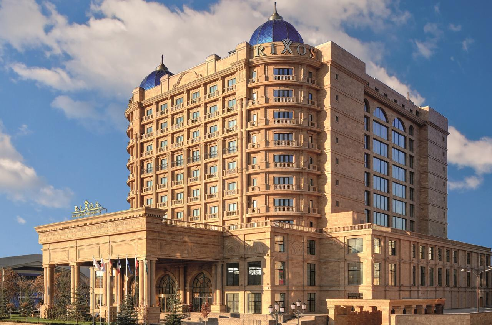
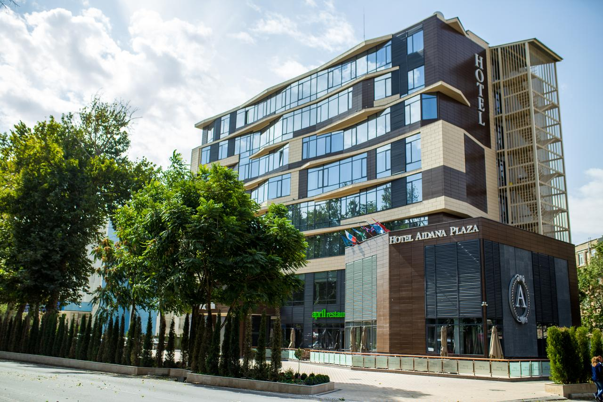
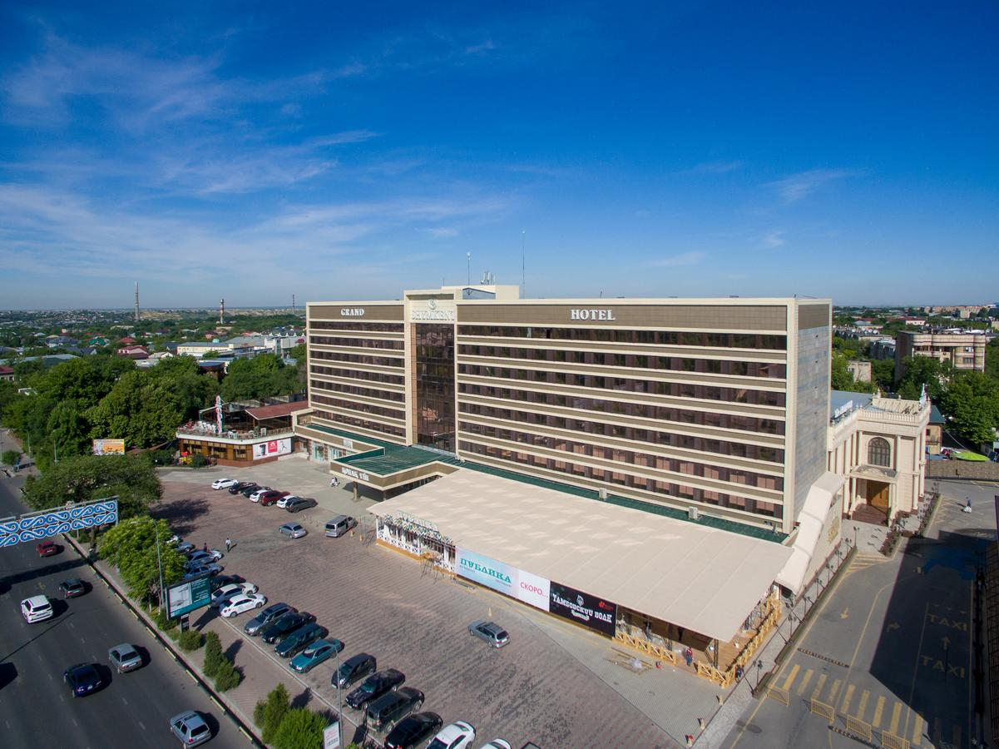
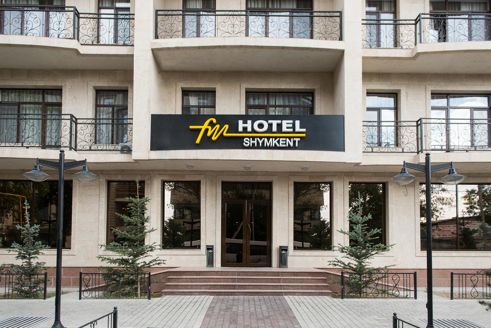
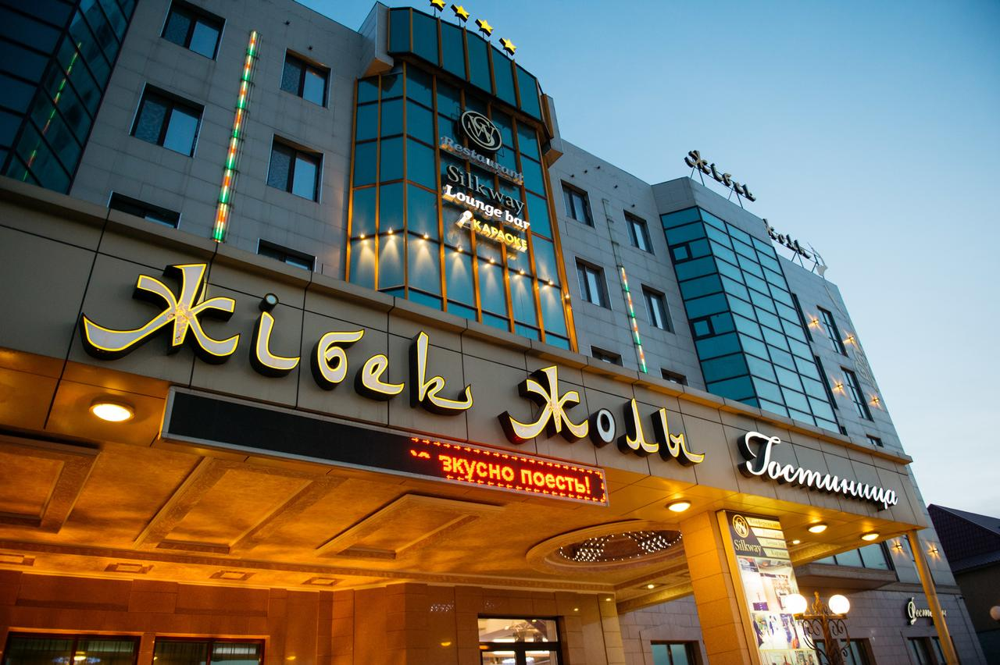
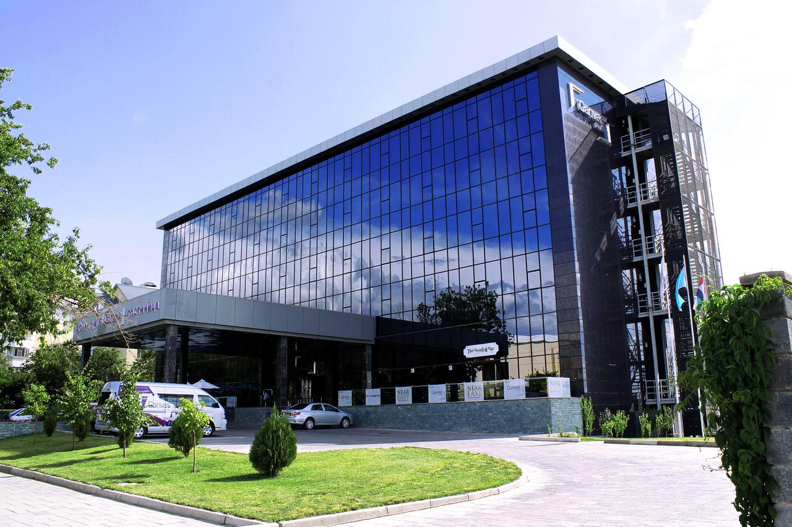
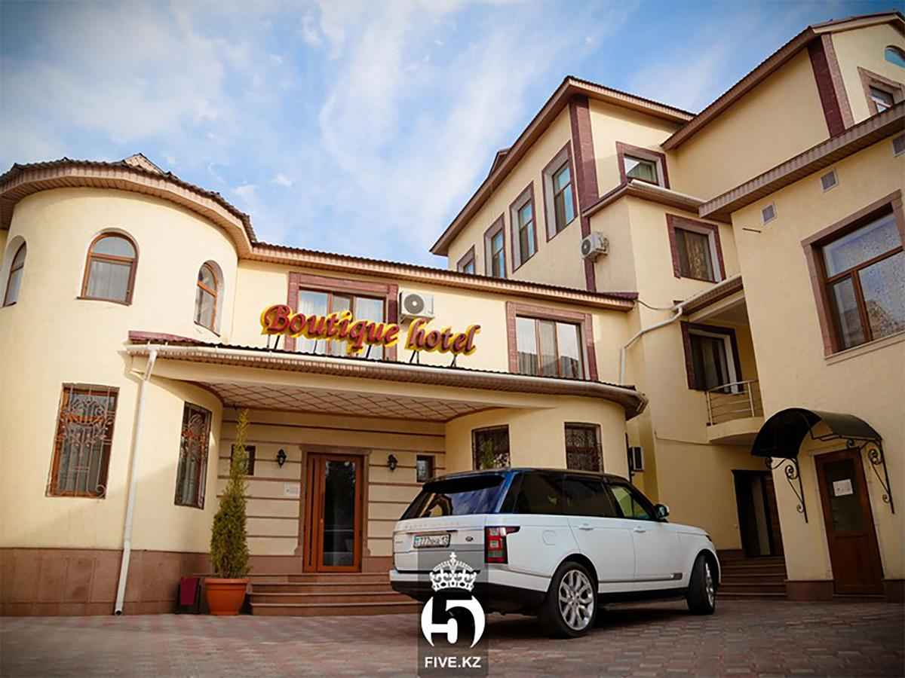
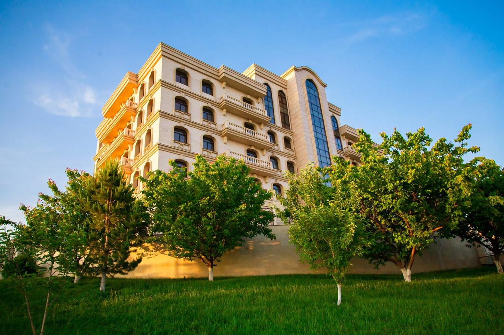
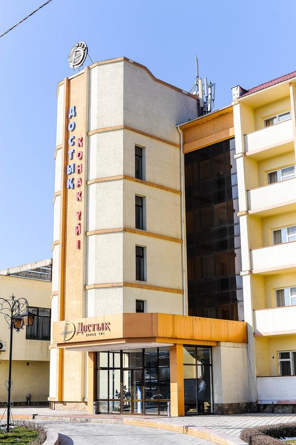

Rixos Khadisha Shymkent
5 stars
Exceptional 9.6 / 10
The elegant suites and rooms feature traditional neoclassic decor and marble bathrooms. They are air conditioned and offer a flat-screen TV and a coffee machine.
• Free breakfast • Free parking • Free WiFi • 2 restaurants • Close to shopping
Avg. price/night:
KZT 36,000

Aidana Plaza Hotel
4 stars
Exceptional 9.2 / 10
Set in Shymkent, Aidana Plaza Hotel has a restaurant, bar and free WiFi throughout the property. Boasting a 24-hour front desk, this property also provides guests with a water park.
• Free private parking • Free WiFi
Avg. price/night:
KZT 18,000

Shymkent Hotel
4 stars
Exceptional 8.8 / 10
The rooms have a balcony, TV and minibar. All rooms come with air conditioning and a private bathroom. Breakfasts are served every morning in the hotel’s restaurant, or eat out in the cafes and restaurants nearby.
• Free breakfast • Free private parking • Free WiFi
Avg. price/night:
KZT 15,000

Hotel FN Shymkent
4 stars
Exceptional 9.4 / 10
One of our bestsellers in Shymkent!
Hotel FN Shymkent is located in Shymkent and features a bar. Among the facilities of this property are a restaurant, a 24-hour front desk and room service. Guests of FN Shymkent Hotel can relax in the sauna or by the pool. A massage service is also provided.
• Free breakfast • Free private parking • Free WiFi
Avg. price/night:
KZT 21,000

Hotel Zhibek Zholy
4 stars
Exceptional 9.0 / 10
Hotel Zhibek Zholy is set in Shymkent and features a bar. Among the facilities of this property are a restaurant, a 24-hour front desk and room service, along with free WiFi throughout the property. The accommodation offers evening entertainment and a shared lounge.
• Free Bar • Free breakfast • Free private parking • Free WiFi
Avg. price/night:
KZT 19,000

Canvas Hotel Shymkent
4 stars
Exceptional 8.9 / 10
One of our top picks in Shymkent.
Located 3 km from Shymkent Old Town district, this hotel features an indoor swimming pool and fitness centre. All the elegant room at Canvas Hotel Shymkent are decorated in neutral colours and Canvas’s modern restaurant serves both European and Lebanese cuisine.
• Swimming pool and fitness centres • Pay Bar • Free breakfast • Free private parking • Free WiFi
Avg. price/night:
KZT 25,000

Altair Hotel
4 stars
Exceptional 8.6 / 10
Just a 5-minute walk from Shymkent's central square, Altair Hotel offers modern rooms with free WiFi access. Guests will appreciate the 24-hour front desk as well as the air conditioning which comes standard in all rooms. Guests can also choose to relax at the hotel's pool and sauna for an extra fee.
• Swimming pool and fitness centres • Free breakfast • Free private parking • Free WiFi
Avg. price/night:
KZT 23,000

Kainar Hotel
4 stars
Exceptional 8.7 / 10
Offering indoor pool, a spa and wellness centre, Kainar Hotel is located at the highest point of Shymkent. At Kainar Hotel guests will find a la carte restaurant and a fitness centre. An array of activities can be enjoyed on site or in the surroundings, including horse riding.
• Swimming pool and fitness centres • Free breakfast • Free private parking • Free WiFi
Avg. price/night:
KZT 22,000

Dostyk Hotel
4 stars
Exceptional 8.5 / 10
This hotel is located in the business area of Shymkent, 500 m from Kaldayakova Park. A 24-hour front desk is featured at Dostyk Hotel.The elegant, air-conditioned rooms offer warm-coloured interiors and classic-style decor. All rooms include a TV, a balcony and a private bathroom. Shymkent Central Train Station is a 10-minute drive from Dostyk Hotel.
• Swimming pool and fitness centres • Free breakfast • Free private parking • Free WiFi
Avg. price/night:
KZT 21,000